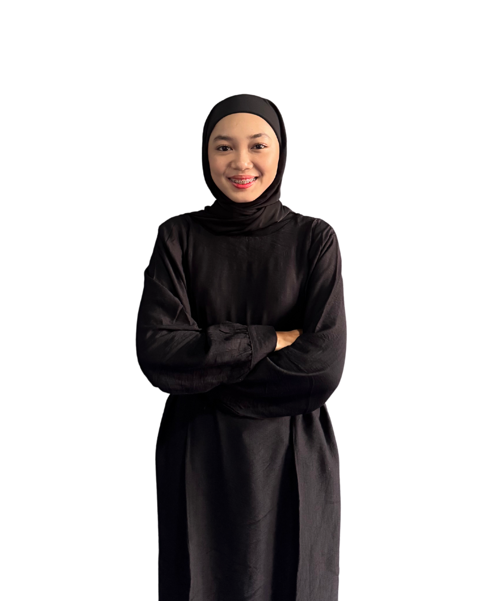

Menghubungkan Analisis Data Kuantitatif dengan Manajemen SDM & Proyek.
Lulusan Sarjana Matematika dari IPB University dengan ketertarikan pada HR Analytics dan People Development. Menggabungkan kemampuan analitis dalam pengolahan dan validasi 1.500+ data records menggunakan Python dan Excel dengan pengalaman dalam Human Resource Development, evaluasi KPI, dan people management. Berpengalaman memimpin dan mengembangkan 11 anggota PSDM serta mengoordinasikan 65+ panitia dalam kegiatan tingkat universitas. Tertarik mengubah data menjadi insight yang dapat mendukung pengambilan keputusan, pengembangan karyawan, dan efektivitas organisasi.
3 Fokus Karir Utama
Integrasi kemampuan analitis matematika, pengembangan sumber daya manusia, dan manajemen proyek.
HR & People Analytics
Memimpin Departemen PSDM (Pengembangan Sumber Daya Mahasiswa) Gumatika IPB. Merancang sistem evaluasi kinerja, memonitor metrik kehadiran dan partisipasi aktif anggota, serta mengelola 100+ arsip data kepegawaian organisasi.
Leadership & Project Coordination
Memimpin 65+ panitia sebagai Project Lead Neomath 2025 dan Sekretaris Operasional SPIRIT lintas 10 divisi. Terbiasa menyusun timeline bertahap, alokasi sumber daya, mitigasi risiko, dan tata kelola operasional berbasis data.
Data Analysis & Quality Control
Memiliki sertifikasi BNSP Associate Data Scientist dan pengalaman kerja melakukan kontrol kualitas pada 1.500+ data records di PT Optima Solusi Indonesia. Terampil statistik multivariat, pembersihan data, dan visualisasi EDA.
Proyek Terpilih
Penerapan analisis data, kontrol kualitas, optimasi operasional, dan kepemimpinan program.
Data Quality Control & Validation System
PT Optima Solusi Indonesia
Melakukan inspeksi audit integritas pada 1.500+ baris data. Menangani identifikasi diskrepansi, pencocokan data sumber asli, serta manajemen alur arsip cloud data bersama tim 5 orang.
Incident Risk Prediction & Workplace Shift Analysis
Model: Random Forest, XGBoost & Visualisasi EDA
Menganalisis pola shift kerja operasional terhadap risiko insiden menggunakan visualisasi heatmap interaktif, identifikasi tren kuartal, serta pemodelan klasifikasi XGBoost & Random Forest.
Neomath 2025: Program Coordination & Risk Management
Departemen Matematika IPB University
Memimpin 65+ panitia lintas divisi untuk menyelenggarakan masa orientasi sekitar 80 mahasiswa baru. Menyusun timeline bertahap, manajemen risiko kendala teknis, dan pengawasan anggaran kegiatan.
Simulasi Propagasi Sinyal Wi-Fi Menggunakan Metode Elemen Hingga
Jurnal Techno.Com (Vol. 25 No. 1, 2026)
Penulis artikel riset ilmiah mengenai model matematika gelombang Helmholtz dan FEM untuk memetakan pelemahan sinyal Wi-Fi pada denah rumah L di jurnal terakreditasi nasional.
Nuclear Waste Transportation Route Optimization (MILP)
Model: Mixed Integer Linear Programming
Memformulasikan model optimasi logistik dengan Mixed Integer Linear Programming (MILP) untuk meminimalkan risiko paparan radiasi populasi di bawah batasan waktu tempuh armada.
COPD Severity Classification (PCA + Multinomial Logistic)
IPB University — Tugas Akhir
Membangun model analisis data klasifikasi keparahan penyakit paru. Menggunakan Principal Component Analysis (PCA) untuk mereduksi multikolinieritas fitur klinis dan Regresi Logistik Multinomial.
Cryptographic Security Analysis: Rabin & Rabin–Williams Signatures
Teori Bilangan & Digital Signature
Mengkaji ketahanan matematis skema tanda tangan digital berbasis residu kuadratik modulo faktorisasi prima N = pq terhadap serangan pemalsuan dan kompleksitas verifikasi.
Pengalaman Kerja & Kepemimpinan
Rekam jejak profesional di industri dan kepemimpinan organisasi universitas.
Data Quality Control Specialist
PT Optima Solusi Indonesia
Bertanggung jawab langsung memastikan akurasi, konsistensi, dan kelengkapan 1.500+ record data agar selaras dengan dokumen acuan primer.
- Melakukan audit validasi komprehensif pada 1.500+ baris data guna menjaga standar akurasi data analitik perusahaan.
- Mengidentifikasi, menandai, dan mengklarifikasi anomali/diskrepansi data terhadap berkas sumber rujukan.
- Memanfaatkan formula lanjutan Microsoft Excel & Google Sheets (VLOOKUP, Pivot Tables, aturan validasi data, dan logika kondisional).
- Mengorganisir arsitektur penyimpanan cloud (Google Drive) dan berkolaborasi secara tangkas dalam tim remote beranggotakan 5 orang.
Ketua Departemen Pengembangan Sumber Daya Mahasiswa (PSDM / HRD)
Gumatika (Himpunan Mahasiswa Matematika IPB)
• HR Analytics & KPI Management: Memimpin 11 staf HRD dalam merancang sistem evaluasi kinerja anggota, memonitor metrik kehadiran dan partisipasi aktif mahasiswa, serta memastikan target program kerja tercapai 100%.
• Mengelola delegasi penugasan, memfasilitasi komunikasi tim, dan membina lingkungan kerja yang inklusif dan suportif.
Ketua Pelaksana Neomath 2025 (Project Lead)
Departemen Matematika IPB University
• Project Management Skala Besar: Memimpin 65+ panitia lintas divisi untuk menyukseskan rangkaian masa orientasi sekitar 80 mahasiswa baru Departemen Matematika IPB.
• Mengelola timeline bertahap, pemetaan risiko kendala lapangan, mitigasi masalah lintas divisi secara real-time, dan kepatuhan anggaran kegiatan.
Sekretaris Departemen PSDM (HRD)
Gumatika (Himpunan Mahasiswa Matematika IPB)
• Mengelola data 100+ dokumen administratif HRD, database keanggotaan, surat-menyurat resmi, dan menyusun notulensi lebih dari 30 rapat koordinasi departemen.
Sekretaris Umum E-Math 2024
Masa Orientasi Departemen Matematika IPB
• Mengoordinasikan kebutuhan administrasi dan alur komunikasi lintas 7 divisi kepanitiaan yang melibatkan 60+ panitia untuk 5 rangkaian kegiatan.
Sekretaris Operasional SPIRIT FMIPA 2024
Fakultas MIPA IPB University
• Mengawal manajemen operasional acara skala fakultas yang melibatkan 50+ panitia dan 10+ cabang perlombaan olahraga dan kesenian.
Sertifikat & Publikasi Ilmiah Terverifikasi
Dokumen resmi yang diterbitkan oleh BNSP, penerbit jurnal nasional, dan IPB University.
Simulasi Propagasi Sinyal Wi-Fi Menggunakan Metode Elemen Hingga
Jurnal Techno.Com (Vol. 25, No. 1)
DOI: 10.62411/tc.v25i1.15769
BNSP Associate Data Scientist
Badan Nasional Sertifikasi Profesi (BNSP)
Kompeten dalam uji kompetensi data science: analisis tren, pembersihan data, serta pemodelan machine learning.
Pelatihan BNSP SSMI 2026: Associate Data Scientist
Lembaga Pelatihan SSMI & BNSP
Pelatihan intensif persiapan asesmen mencakup EDA, feature engineering, pemodelan data, dan evaluasi metrik.
Surat Keterangan Lulus (SKL) Sarjana Matematika
FMIPA IPB University
Dokumen resmi kelulusan Program Sarjana (S1) Departemen Matematika IPB University menyandang gelar Sarjana Matematika (S.Mat).
Ketua Pelaksana Neomath 2025
Departemen Matematika IPB
Sertifikat penghargaan sebagai Project Lead memimpin 65+ anggota panitia pada masa orientasi mahasiswa baru.
Ketua Departemen PSDM (HRD) Gumatika IPB
Gumatika FMIPA IPB University
Sertifikat kepengurusan sebagai Kepala Departemen PSDM, mengoordinasikan 11 staf dan evaluasi KPI kaderisasi.
Sekretaris Departemen PSDM Gumatika
Gumatika FMIPA IPB University
Pengelolaan 100+ dokumen administratif HRD, database keanggotaan, dan arsip program kerja divisi.
Sekretaris Umum E-Math 2024
Masa Orientasi Departemen Matematika IPB
Pengelolaan seluruh surat keputusan, izin kegiatan kampus, dan dokumentasi rapat koordinasi kepanitiaan E-Math.
Sekretaris Operasional SPIRIT FMIPA 2024
Fakultas MIPA IPB University
Operasional administrasi acara perlombaan olahraga & seni fakultas yang melibatkan 50+ panitia lintas 10 divisi.
Volunteer MPKMB IPB Angkatan 60
Direktorat Kemahasiswaan IPB
Memfasilitasi dan mendampingi ribuan mahasiswa baru pada Masa Pengenalan Kampus Mahasiswa Baru IPB.
Matriks Keahlian Terstruktur
Ringkasan kemampuan analitis, manajerial SDM, dan penguasaan perangkat lunak.
HR & People Analytics
Leadership & Project Tools
Data Analysis & Tech
Institut Pertanian Bogor (IPB University)
Sarjana Matematika (S.Mat)
Departemen Matematika — Fakultas MIPA
“COPD Severity Classification Using Principal Component Analysis (PCA) and Multinomial Logistic Regression”
Menerapkan reduksi dimensionalitas statistik untuk menangani korelasi variabel klinis dan membangun algoritma klasifikasi probabilitas diagnostik pasien penyakit paru obstruktif kronis.


.png)